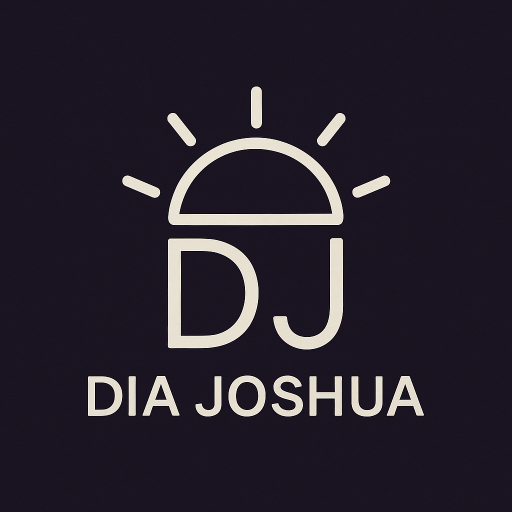

Clean interfaces
I care about layouts, spacing, responsiveness, and the little details that make a site feel intentional.

Joshua DiaQuezon City, Philippines · Open to dev roles
Hi, I’m Joshua — I build useful web apps, AI tools, and dashboards that stay clean under pressure.
My work sits at the intersection of software engineering, cybersecurity, and data. I like turning messy requirements into calm interfaces, reliable systems, and tools people can actually use without a manual.

About
I’m a Computer Science graduate specializing in Digital Forensics. I enjoy building full-stack products, working with data, and exploring security-focused systems. My strongest work usually starts with one question: “How can this be simpler, faster, and harder to break?”
I care about layouts, spacing, responsiveness, and the little details that make a site feel intentional.
Digital forensics trained me to think in traces, evidence, edge cases, and systems behavior.
I’m comfortable jumping between frontend, backend, data work, GitHub workflows, and deployment tasks.
Skills
Education
Projects
Built a cybercrime awareness platform with an AI chatbot trained around local cyber law context, designed to make safety information easier to understand.
Visit WebsiteCreated an image-based Philippine peso bill identifier using TensorFlow and computer vision for real-time classification.
Built dashboards and reports using Python and Power BI to clean, analyze, and communicate patterns from datasets.
Developed an e-commerce platform with authentication, product catalog, shopping cart, seller dashboard, and admin tools.
Built a facial recognition prototype using OpenCV and TensorFlow, trained on personal datasets for live recognition.
Designed and developed an artwork management app with upload flows, browsing, and category-based organization.
Contributed to a record-keeping interface for logging, filtering, and exporting pest control treatment data.
Experience
Mar 2025 – Present · Remote
Worked on Laravel and Docker-based systems, supporting feature development, maintenance, version control, and deployment workflows in a remote team setup.
Certifications
Score: 850 — strong professional English communication.
Cloud fundamentals and core IBM Cloud concepts.
View CertificateFundamentals of data analytics using AWS services.
View CertificateFiltering, sorting, aggregation, comparison operators, functions, and query limiting.
View CertificateCybersecurity puzzles and exploitation challenges completed in a timed team environment.
View CertificateNext step
Send a message or grab my resume. I’m interested in full-stack work, data-heavy products, and security-minded teams.
Contact
Joshua Dia
Quezon City, Philippines
diajoshua05@gmail.com